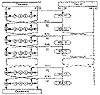

| Previous | Table of Contents | Next |
REDOC III
REDOC III is a streamlined version of REDOC II, also designed by Michael Wood [1615]. It operates on an 80-bit block. The key length is variable and can be as large as 2560 bytes (20, 480 bits). The algorithm consists solely of XORing key bytes with message bytes; there are no permutations or substitutions.
The algorithm is easy and fast. On a 33 megahertz 80386, the algorithm encrypts data at 2.75 megabits per second. Wood estimates that a VLSI-pipelined design, with a 64-bit data path, woud encrypt data at over 1.28 gigabits per second with a 20 megahertz clock.
REDOC III is not secure [1440]. It is vulnerable to differential cryptanalysis. Only about 223 chosen plaintexts are required to reconstruct both masks.
Patents and Licenses
Both REDOC versions are patented in the United States [1614]. Foreign patents are pending. Anyone interested in licensing either REDOC II or REDOC III should contact Michael C. Wood, Delta Computec, Inc., 6647 Old Thompson Rd., Syracuse, NY 13211.
LOKI is Australian and was first presented in 1990 as a potential alternative to DES [273]. It uses a 64-bit block and a 64-bit key. The general structure of the algorithm and key schedule were based on [274, 275], and the design of the S-boxes was based on [1247].
Using differential cryptanalysis, Biham and Shamir were able to break LOKI with 11 or fewer rounds faster than by brute force [170]. Furthermore, there is an 8-bit complementation property, which reduces the complexity of a brute-force attack by a factor of 256 [170, 916, 917].
Lars Knudsen showed that LOKI, with 14 rounds or fewer, is vulnerable to differential cryptanalysis [852, 853]. Additionally, if LOKI is implemented with alternate S-boxes, the resulting cipher will probably be vulnerable to differential cryptanalysis.
LOKI91
In response to these attacks, LOKI’s designers went back to the drawing board and revised their algorithm. The result is LOKI91 [272]. (The previous version of LOKI was renamed LOKI89.)
To make the algorithm more resistant to differential cryptanalysis and to remove the complementation property, the following changes were made to the original design:
Description of LOKI91
The mechanics of LOKI91 are similar to DES (see Figure 13.8). The data block is then divided into a left half and a right half and goes through 16 rounds, much like DES. In each round, the right half is first XORed with a piece of the key, then sent through an expansion permutation (see Table 13.1).
The 48-bit output is divided into four 12-bit blocks, and each block is sent through an S-box substitution. The S-box substitution is as follows: Take each 12-bit input; use the 2 left-most bits and the 2 right-most bits to form the number r, and the 8 innermost bits and form the number c. The output of the S-box, O, is as follows:

Figure 13.8 LOKI91.
Pr is given in Table 13.2.
Then, the four 8-bit outputs are recombined to form a single 32-bit number and sent through the permutation described in Table 13.3. Finally, the right half is XORed with the left half to become the new left half, and the left half becomes the new right half. After 16 rounds, the block is again XORed with the key to produce the ciphertext.
The subkeys are generated from the key in a straightforward manner. The 64-bit key is split into a left half and a right half. In each round, the subkey is the left half. This left half is then rotated 12 or 13 bits to the left, and then every two rounds the left and right halves are exchanged. As with DES, the same algorithm can be used for both encryption and decryption, with some modification in how the subkeys are used.
| Table 13.1 Expansion Permutation | |||||||||||
|---|---|---|---|---|---|---|---|---|---|---|---|
| 4, | 3, | 2, | 1, | 32, | 31, | 20, | 29, | 28, | 27, | 26, | 25, |
| 28, | 27, | 26, | 25, | 24, | 23, | 22, | 21, | 20, | 19, | 18, | 17, |
| 20, | 19, | 18, | 17, | 16, | 15, | 14, | 13, | 12, | 11, | 10, | 9, |
| 12, | 11, | 10, | 9, | 8, | 7, | 6, | 5, | 4, | 3, | 2, | 1 |
| Table 13.2 Pr | ||||||||||||||||
|---|---|---|---|---|---|---|---|---|---|---|---|---|---|---|---|---|
| r: | 1, | 2, | 3, | 4, | 5, | 6, | 7, | 8, | 9, | 10, | 11, | 12, | 13, | 14, | 15, | 16 |
| Pr: | 375, | 379, | 391, | 395, | 397, | 415, | 419, | 425, | 433, | 445, | 451, | 463, | 471, | 477, | 487, | 499 |
Cryptanalysis of LOKI91
Knudsen attempted to cryptanalyze LOKI91 [854, 858], but found it secure against differential cryptanalysis. However, he found a related-key chosen-plaintext attack that reduces the complexity of a brute-force search by almost a factor of four. This attack exploits a weakness in the key schedule and may also apply if the algorithm is used as a one-way hash function (see Section 18.11).
Another attack on related keys can break LOKI91 with 232 chosen-key chosen plaintexts, or 248 chosen-key known plaintexts [158]. The attack is independent of the number of rounds of the algorithm. (In the same paper, Biham breaks LOKI89 with 217 chosen-key chosen plaintexts or 233 known-key known plaintexts using related-key cryptanalysis.) It’s easy to make LOKI91 resistant to this attack; avoid the simple key schedule.
| Previous | Table of Contents | Next |
){kind=link}
){kind=link}